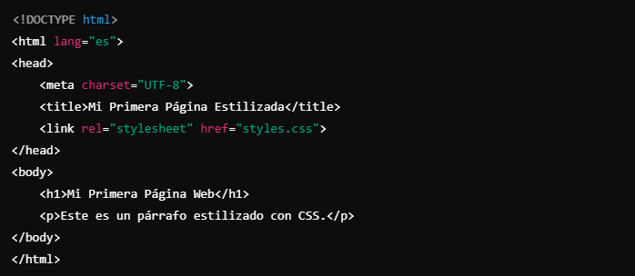

Bienvenidos a este blog sobre la programación web, donde exploraremos los fundamentos de HTML y CSS,
las dos tecnologías básicas para crear y dar estilo a cualquier página en la web. Si eres nuevo
en el desarrollo web, estás en el lugar correcto.
Empezaremos desde lo más básico y, poco a poco,
construiremos una base sólida para que puedas avanzar hacia proyectos más complejos.

¿Qué es HTML y por qué es importante?
HTML (HyperText Markup Language) es el lenguaje de marcado que estructura el contenido de las páginas web. Con HTML, puedes crear los elementos básicos de una página, como encabezados, párrafos, listas, imágenes y enlaces.
Piensa en HTML como el "esqueleto" de una página web. Este lenguaje define la estructura y los elementos que el navegador mostrará. Desde un simple párrafo hasta un complejo formulario, todo lo que ves en una web está marcado por HTML.
¿Qué es CSS y cómo transforma una página web?
CSS (Cascading Style Sheets) es el lenguaje que usamos para dar estilo a los elementos HTML. CSS permite cambiar colores, fuentes, tamaños y, en general, mejorar la apariencia de tu página. Con CSS, podemos transformar un simple esqueleto de HTML en una página atractiva y amigable para el usuario.
Piensa en CSS como la "piel" de tu página web. Es lo que hace que tu sitio web no solo sea funcional, sino también visualmente atractivo.
HTML y CSS Juntos: Construyendo una Página Web Básica
Para crear una página web funcional, combinamos HTML y CSS. El HTML se encarga de la estructura, mientras que CSS maneja el estilo.
Beneficios de Aprender HTML y CSS
1. Es el punto de partida para cualquier desarrollador web: Sin HTML y CSS, no puedes hacer una página web. Son fundamentales, incluso para proyectos más complejos.
2. Es relativamente fácil comenzar: No necesitas conocimientos previos para empezar. Solo con saber cómo abrir el bloc de notas y un navegador, ¡ya puedes empezar!
3. Proporciona una base sólida para aprender más: Una vez que dominas HTML y CSS, es mucho más fácil avanzar a lenguajes como JavaScript y frameworks como React.
Consejos para Empezar
1. Practica regularmente: Crea pequeñas páginas web y experimenta con diferentes estilos.
2. Usa recursos gratuitos en línea: Sitios como W3Schools y MDN Web Docs ofrecen tutoriales excelentes.
3. Construye un proyecto personal: Puede ser una página sobre tu hobby o una landing page simple. Practicar en proyectos reales es una de las mejores maneras de aprender.
Conclusión
Aprender HTML y CSS es el primer paso para convertirte en desarrollador web. Aunque parecen simples, dominar estos lenguajes te permitirá crear sitios web funcionales y atractivos, y sentará las bases para aprender tecnologías más avanzadas en el futuro. ¡Así que empieza ya, explora y diviértete en este emocionante viaje en el desarrollo web!